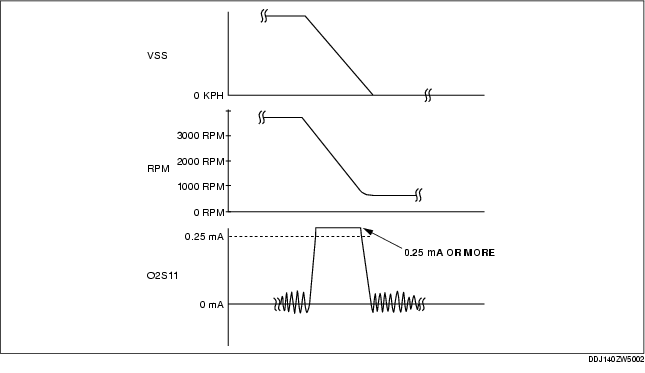
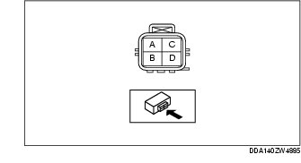
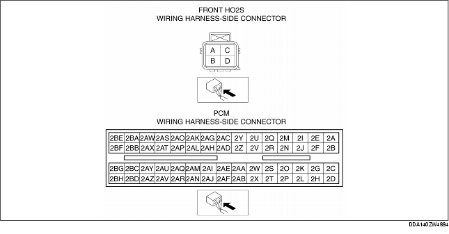

Front heated oxygen sensor (HO2S) inspection [ZY]
- • Before performing the following inspection, make sure to follow the procedure as indicated in the troubleshooting flowchart. (See Troubleshooting Procedure.)
Front Heated Oxygen Sensor (HO2S) Current Inspection
1. Warm up the engine to normal operating temperature.
2. Connect the WDS or equivalent to the DLC-2.

3. Using the WDS or equivalent, monitor the following:
4. Drive the vehicle and decelerate the engine speed by releasing the accelerator pedal fully when the engine speed is 3,000 rpm or more.
5. Verify that the front HO2S current (PID: O2S11) is 0.25 mA or more while decelerating as shown in the figure.

- • If not within the specification, inspect the front HO2S for an open or short circuit. (See Front Heated Oxygen Sensor (HO2S) Circuit Open/Short Inspection.) Then if there is no malfunction in the wiring harness, replace the front HO2S.
Front Heated Oxygen Sensor (HO2S) Circuit Open/Short Inspection
1. Remove the PCM connector cover.
2. Disconnect the PCM connector. (See INTAKE-AIR SYSTEM REMOVAL/INSTALLATION [ZY].)
3. Disconnect the front HO2S connector.
4. Inspect the following wiring harness for open or short circuit (Continuity inspection).

Open circuit
- • If there is no continuity, there is an open circuit. Repair or replace the wiring harness.
- - Front HO2S terminal A and PCM terminal 2Z
- - Front HO2S terminal B and PCM terminal 2AD
Short circuit
- • If there is continuity, there is a short circuit. Repair or replace the wiring harness.
- - Front HO2S terminal A and power supply
- - Front HO2S terminal A and body GND
- - Front HO2S terminal B and power supply
- - Front HO2S terminal B and body GND
Front Heated Oxygen Sensor (HO2S) Heater Resistance Inspection
1. Disconnect the front HO2S connector.
2. Measure the resistance between front HO2S terminals C and D.

- • If not within the specification, replace the front HO2S. (See FRONT HEATED OXYGEN SENSOR (HO2S) REMOVAL/INSTALLATION [ZY].)
- • If the monitor item condition/specification (reference) is not within the specification, even though there is no malfunction, perform the "Circuit Open/Short Inspection".
Front Heated Oxygen Sensor (HO2S) Heater Circuit Open/Short Inspection
1. Remove the PCM connector cover.
2. Disconnect the PCM connector. (See INTAKE-AIR SYSTEM REMOVAL/INSTALLATION [ZY].)
3. Inspect the following wiring harness for open or short circuit (Continuity inspection).

Open circuit
- • If there is no continuity, there is an open circuit. Repair or replace the wiring harness.
- - Front HO2S terminal C and PCM terminal 2I
- - Front HO2S terminal D and PCM terminal 2X
Short circuit
- • If there is continuity, there is a short circuit. Repair or replace the wiring harness.
- - Front HO2S terminal C and body GND
- - Front HO2S terminal D and power supply
- - Front HO2S terminal D and body GND